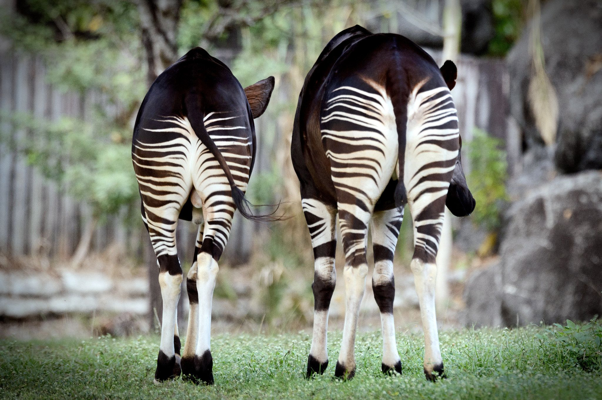
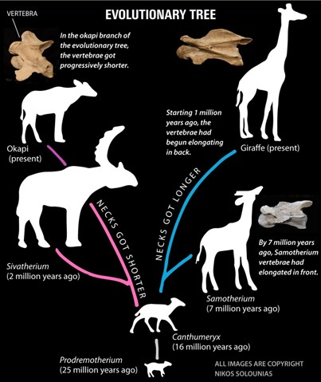

What is the Okapi?
The Okapi, also known as the ‘forest giraffe’, is a mammal that lives
in the rainforests of the Democratic Republic of Congo. It looks like
a cross between a deer and a zebra. It is more closely related to the
giraffe than the zebra, despite having striped markings similar to the
zebra. Okapis are one of the oldest mammals on Earth but were unknown
to scientists until 1901.

Taxonomy
Kingdom: Animalia
Phylum: Chordata
Class: Mammalia
Order: Artiodactyla
Family: Giraffidae
Genus: Okapia
Species: Johnstoni
Diet
Okapis are herbivores meaning that it lives on a diet that is only
comprised of plants. They eat tree leaves, grass, fruit, twigs and
other vegetation they draw into their mouths with the help of their
long prehensile tongues. They are known to consume over 100 different
types of plants, many of which are harmful to other animals and
humans. Similar to giraffes and cows, okapis have four stomachs that
help it digest tough plants. An okapi can eat between 18 to 29
kilograms of food every day, including minerals and salt from riverbed
clay.
Habitat
Okapis generally reside in tropical rainforests of Democratic Republic
of the Congo's north-east region at altitudes of 500 to 1,000 metres.
They live among dense rainforests along rivers & swamps. The brown and
white stripes on its rump mimic the appearance of sunlight streaking
through the leaves, allowing it to blend in with its surroundings.
Okapis have several square kilometres of overlapping home ranges. They
are very shy and elusive animals that are generally found wandering
around the forest on their own. They are diurnal animals, which mean
they are active during the day.
Reproduction
Okapis live alone but come together to mate. The Females have a
reproduction period (gestation) of about 14-16 months and give birth
to one young. During birth, mothers usually retreat into dense forests
to give birth. Baby okapis are called calves. Similar to other hooved
herbivores, okapi newborns are able to walk just 30 minutes after
they’re born. Unlike other animals, the young do not seem to bond with
their mothers and have been found nursing from two different females.
A three-week-old okapi calf begins eating solid food and defecates
(poops) for the first time between the ages of four and eight weeks.
This helps predators from sniffing out the newborns until they have
had time to develop and gain strength. Young Okapis don't hit full
adult size until they're about three years old. Generally, female
okapis breed every two to three years.
Role
Okapis live alone but come together to mate. The Females have a
reproduction period (gestation) of about 14-16 months and give birth
to one young. During birth, mothers usually retreat into dense forests
to give birth. Baby okapis are called calves. Similar to other hooved
herbivores, okapi newborns are able to walk just 30 minutes after
they’re born. Unlike other animals, the young do not seem to bond with
their mothers and have been found nursing from two different females.
A three-week-old okapi calf begins eating solid food and defecates
(poops) for the first time between the ages of four and eight weeks.
This helps predators from sniffing out the newborns until they have
had time to develop and gain strength. Young Okapis don't hit full
adult size until they're about three years old. Generally, female
okapis breed every two to three years.
TYPE: Mammals
DIET: Herbivore
LIFESPAN: 20 to 30 years
HEIGHT: 1.5 - 2 metres
WEIGHT: 200kg - 300kg
STATUS: Endangered
ACTIVE: Diurnal
PREY: Leaves, fruit
PREDATORS: Leopard
NO. OF SPECIES: 1
TOP SPEED: 59 kph
SKIN TYPE: Fur
GESTATION: 14 - 16 months
Fun Facts
- The ears of an okapi can rotate independently, so it can listen for
sounds both in front and behind.
- Okapi stripes are sometimes called "follow me" stripes, as the bold
pattern makes it easy for a calf to follow its mother through the dark
rainforest.
- Like the giraffe, the okapi must splay its legs to reach the ground
when drinking.
Adaptations

Structural
Long tongue: this helps the okapi reach leaves from tall tree
branches. It can be extended up to 25 cm long, assisting it in wiping
the eyes, cleaning the ears and nostrils
Continuously growing teeth: due to the excessive amount of
grazing and chewing they do; their teeth naturally break down. This
adaptations enables them to graze all day long because their teeth
never stop growing!
Zebra stripes: this zebra stripes helps the okapi blend itself
more efficiently with its surroundings
Sharp sense of hearing: Okapis have enhanced hearing ability
that alerts them to run when they hear humans or predators in the
distance.
Scent glands: they have scent glands on their feet that leave
behind a tar-like substance to mark their territory.
Physiological
Newborns: when okapi calves are born, they do not defecate (poop)
until they are between four to eight weeks old. Although they are still
tiny and frail, this adaptation allows them to remain shielded from
their predator's powerful sense of smell.
Infrasonic sounds: okapi mothers produce infrasonic calls that
allow them to communicate with their calves without any predator
hearing it. These noises are undetectable to the human ear
Unique digestive system: this allows them to better digest and
use energy from fibrous plants more efficiently.
Behavioural
Marking territory: on their way home, the male okapis leave a
trail of urine. They do this to let the other men know that their land
is theirs alone. Often, two or more Okapi males will battle with their
horns for the same territory.
New leaves: to gain energy, the okapi consumes new leaves. If
they consume the old leaves, then will eat the fungus and algae.
Genetics & Evolution
The okapi and giraffe shared a common ancestor about 16 million years
ago. According to a 2015 study published in the journal Royal Society
Open Science, this ancestor, known as Canthumeryx, had an elongated
neck. Following Canthumeryx, the family tree split into two branches,
with giraffe ancestors on one side and okapi ancestors on the other. As
time went on, the okapi’s ancestors developed shorter necks while the
giraffe’s ancestors’ necks lengthened over time. Both, giraffes and
okapis are in the same Giraffidae family, but diverge from each other in
the Genus.
